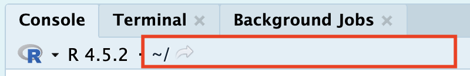
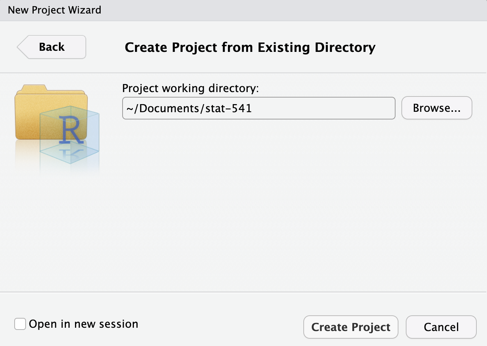

getwd()Quarto Review
CautionOptional Content
This module consists of readings reviewing material typically taught in STAT 331. It is possible you can skip over portions of this reading. It is your responsibility to decide which areas you need to review before diving into Stat 541.
The theme of this lesson is good management of your files and data. For this course, you need to know how to identify folders and paths, and create professional looking Quarto documents.
Answer the following questions to see if you can safely skip this section.
- Which statement best describes the difference between an absolute file path and a relative file path?
- An absolute path works only on Windows systems, while a relative path works on all operating systems.
- A relative path always begins with a drive letter or /, while an absolute path does not.
- An absolute path specifies a file’s location starting from the root directory, while a relative path specifies a location based on the current directory.
- An absolute path can only be used for folders, while a relative path can be used for files.
If you had a hard time answering these questions, I would recommend reviewing Section 1.1.
- Why are R projects important?
- They automatically install all R packages needed for a project.
- They ensure that code always runs faster by optimizing file access.
- They set the working directory to the project folder, making file paths consistent and reproducible.
- They prevent users from accidentally modifying files outside the project.
If you had a hard time answering these questions, I would recommend reviewing Section 1.2.
- What are the options at the top of a Quarto document (between the
---and---symbols) called?
- XML
- YAML
- REML
- TOML
- What symbols create an R code chunk?
```{r}```{r}`{r}`
- What symbol defines a level 1 heading?
$_*#
If you had a hard time answering these questions, I would recommend reviewing Section 2.
Directories, Paths, and Projects
In R, there are two ways to set up your file path and file system organization:
- Set your working directory in
R(do not recommend) - Use RProjects (preferred!)
Working Directories in R
There are a few ways to find where your working directory is in R. You can look at the top of your console (seen below) or type getwd() into your console.

Although it is not recommended, you can set your working directory in R with setwd().
setwd("/path/to/my/assignment/folder")R Projects
Required-readingRequired Reading
Since there are often many files necessary for a project (e.g. data sources, images, etc.), R has a nice built in system for setting up your project organization with R Projects. You can either create a new folder on your computer containing an R Project (e.g., you have not yet created a folder for this class) or you can add an R Project to an existing folder on your computer (e.g., you have already created a folder for this class).
CautionYour folder cannot synch with anything online!
Your STAT 331 folder cannot be in a folder stored on OneDrive or iCloud! Storing your folder in this location will cause your code to periodically not run and I cannot help you fix it.
To create a R Project in a new folder (i.e., you haven’t already made a stat-541 folder), first open RStudio on your computer and click File > New Project, then:
 Next, you should select the “New Project” option from the list of options. Don’t worry, we will get to make many of these other options later on in this class!
Next, you should select the “New Project” option from the list of options. Don’t worry, we will get to make many of these other options later on in this class!
 Give your folder a name (it doesn’t have to be stat-541). However, it is good practice for this file folder name to not contain spaces. Then, browse on your computer for a location to save this folder to. For example, mine is saved in my Documents. Make sure you know how to find this; it should NOT be saved in your Downloads!
Give your folder a name (it doesn’t have to be stat-541). However, it is good practice for this file folder name to not contain spaces. Then, browse on your computer for a location to save this folder to. For example, mine is saved in my Documents. Make sure you know how to find this; it should NOT be saved in your Downloads!
![A screenshot of the popup that appears when you select the 'New Project' option from the New Project popup wizard. Directory name line displays the name of the folder that will be created, in this case stat-541. Below that line, the 'Create project as a subdirectory of' line indicates where on the computer the folder should live. In this case the folder is located in the Documents folder of the Mac. he 'Browse...' button on the right hand side allows the user to click on it and navigate to the location of the existing folder.](images/create-new-rproj-step3.png)
Once you have completed this process, you should see a new stat-541 folder in your Documents folder (or wherever you save it to) and the folder should contain a stat-541.Rproj file. This is your new “home” base for this - whenever you refer to a file with a relative path it will begin to look for it here.
To add a R Project to an existing folder on your computer (e.g., you already created a folder for this class), first open RStudio on your computer and click File > New Project, then:

Then, browse on your computer to select the existing folder you wish to add your R Project to. For example, mine is saved in my Documents and called my-stat331.

Your existing folder, stat-541 should now contain a stat-541.Rproj file. This is your new “home” base for this class - whenever you refer to a file with a relative path it will begin to look for it here.
Reproducible Documents
Over the last ten years, science has experienced a “reproducibility” crisis. Meaning, a substantial portion of scientific findings were unable to be recreated because people didn’t sufficiently document the processes they used. As such, a foundational aspect of scientific research is using tools which allow others to reproduce your findings.
Enter Quarto—a dynamic document that allows us to interweave R code and written text in the same document. Gone are the days of copying and pasting the results of your R code into a Word document—breaking the connection between your analysis and your report. Quarto is here to save the day!
Downloading Quarto
The software associated with Quarto is automatically downloaded with the newest versions of RStudio. So, if you are using the most up to date version of RStudio (as instructed in Part 1 of this week’s coursework), you should already have Quarto installed on your computer. But, let’s test it out.
To ensure you have Quarto installed, carry out the following process:
- Open RStudio
- Click on “File” (in the upper navigation bar)
- Select “New File” (in the dropdown options)
- Select “Quarto Document…” (in the dropdown option)

If you have Quarto installed, you should be prompted with the following menu:
![A screenshot of the menu that should appear when you carry out the process described above. The menu is a square box with a title reading 'New Quarto Document'. On the left hand side of the box, the user can select what type of Quarto product they wish to create (Document, Presentation, or Interactive). On the right hand side, the user can control various aspects of their document, including the title, the author, the type of rendered document (HTML, PDF, or Word). At the bottom there are options to 'Create an Empty Document' (a barebones document), to 'Create' a document (with the user specified options), or 'Cancel'.](images/new-quarto-doc.png)
If, instead, you receive a message saying Quarto is not installed on your computer, you need to download Quarto: https://quarto.org/docs/download/
Introduction to Quarto
Required-readingRequired Reading
HTML Documents
We will exclusively use HTML documents in this course.
Learn-moreLearn More
If you are interested in learning more about formatting options for Quarto HTML documents, I would recommend checking out: